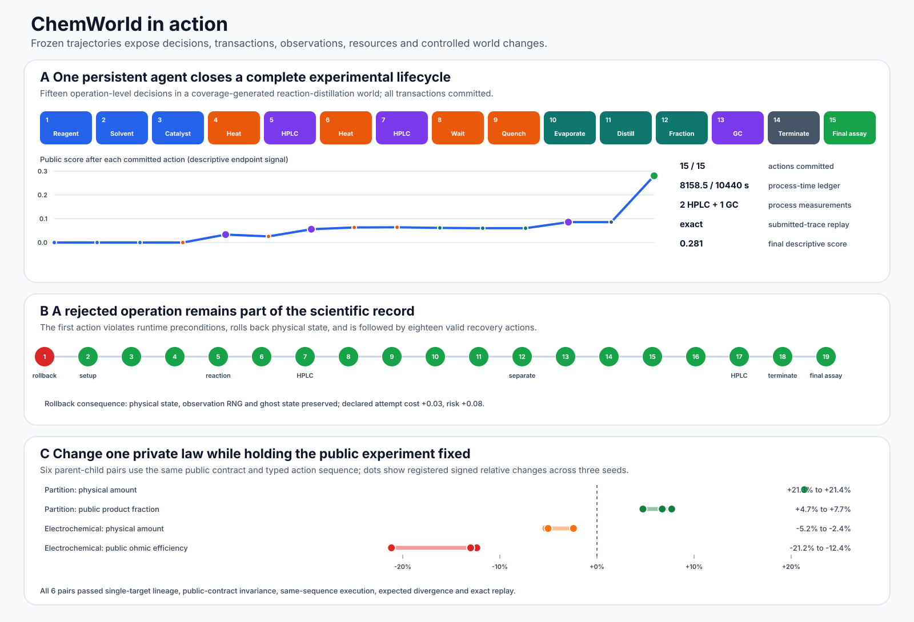

Representative agent behavior and controlled world changes¶
This page is generated from the frozen public evidence reports. It introduces no new experiment and does not expose private world state or provider response content.

Persistent agent lifecycle¶
One persistent agent session submitted and committed 15 typed actions in a non-reference reaction-distillation world. It used 8158.454 of 10440 available process seconds, explicitly terminated, performed one final assay and replayed exactly.
| Step | Action | Public parameters | Δ process time | Observation highlight |
|---|---|---|---|---|
| 1 | Reagent |
0.04 mol | 0.000 s | — |
| 2 | Solvent |
0.08 L; solvent 2 | 0.000 s | — |
| 3 | Catalyst |
0.002 mol; catalyst 1 | 0.000 s | — |
| 4 | Heat |
375 K; 1500 s | 1500.000 s | — |
| 5 | HPLC |
hplc | 0.000 s | conversion 0.094; yield 0.088; distillate purity 0.001; score 0.033 |
| 6 | Heat |
395 K; 1800 s | 1800.000 s | — |
| 7 | HPLC |
hplc | 0.000 s | conversion 0.221; yield 0.203; distillate purity 0.013; score 0.056 |
| 8 | Wait |
2400 s | 2400.000 s | — |
| 9 | Quench |
— | 58.454 s | — |
| 10 | Evaporate |
345 K; 600 s | 600.000 s | — |
| 11 | Distill |
365 K; 1800 s; reflux 2.5 | 1800.000 s | — |
| 12 | Fraction |
fraction 0.7 | 0.000 s | — |
| 13 | GC |
gc | 0.000 s | distillate purity 0.253; score 0.086 |
| 14 | Terminate |
— | 0.000 s | — |
| 15 | Final assay |
final_assay | 0.000 s | conversion 0.324; yield 0.301; distillate purity 0.268; distillate recovery 0.642; endpoint score 0.281 |
The final public packet reported conversion 0.324, yield 0.301, selectivity 0.910, distillate purity 0.268, distillate recovery 0.642 and descriptive score 0.281.
Transaction rollback and recovery¶
The deterministic U03/E01 case deliberately attempted separate_phase before material, volume and a settled phase system existed. The transaction rolled back, preserved physical state, observation RNG and ghost state, retained the declared attempt consequence, and continued from the last committed state.
| Step | Action | Transaction | Δ process time | Role in recovery |
|---|---|---|---|---|
| 1 | Separate |
rolled_back |
0.000 s | Premature separation; rolled back |
| 2 | Solvent |
committed |
0.000 s | Committed recovery action |
| 3 | Reagent |
committed |
0.000 s | Committed recovery action |
| 4 | Catalyst |
committed |
0.000 s | Committed recovery action |
| 5 | Heat |
committed |
1200.000 s | Committed recovery action |
| 6 | Quench |
committed |
18.298 s | Committed recovery action |
| 7 | HPLC |
committed |
0.000 s | Process measurement |
| 8 | Add phase |
committed |
0.000 s | Committed recovery action |
| 9 | Extractant |
committed |
0.000 s | Committed recovery action |
| 10 | Mix |
committed |
180.000 s | Committed recovery action |
| 11 | Settle |
committed |
360.000 s | Committed recovery action |
| 12 | Separate |
committed |
0.000 s | Committed recovery action |
| 13 | Wash |
committed |
0.000 s | Committed recovery action |
| 14 | Dry |
committed |
300.000 s | Committed recovery action |
| 15 | Concentrate |
committed |
600.000 s | Committed recovery action |
| 16 | Transfer |
committed |
0.000 s | Committed recovery action |
| 17 | HPLC |
committed |
0.000 s | Process measurement |
| 18 | Terminate |
committed |
0.000 s | Explicit termination |
| 19 | Final assay |
committed |
0.000 s | Final assay closes the recovered lifecycle |
The rejected attempt retained cost 0.03 and risk 0.08, while consuming no sample and no process time. The full 19-step submitted trace, including the rollback, replayed exactly.
Controlled private-law changes¶
For each parent-child pair, ChemWorld held the public task, action schema, instrument surface, resources and typed action sequence fixed while changing one registered private component. Signed relative change follows the frozen qualification evaluator: sign(child-parent) * |child-parent| divided by the maximum of |parent|, |child| and the registered floor.
| Intervention | Seed | Private target | Physical response | Public response | Fixed gates |
|---|---|---|---|---|---|
| Partition constitutive law | 0 | private_physics.constitutive_laws |
+21.36% | +6.73% | public contract, sequence, replay |
| Partition constitutive law | 1 | private_physics.constitutive_laws |
+21.34% | +7.69% | public contract, sequence, replay |
| Partition constitutive law | 2 | private_physics.constitutive_laws |
+21.36% | +4.74% | public contract, sequence, replay |
| Electrochemical material law | 0 | private_physics.material_laws |
-5.25% | -12.37% | public contract, sequence, replay |
| Electrochemical material law | 1 | private_physics.material_laws |
-5.03% | -13.01% | public contract, sequence, replay |
| Electrochemical material law | 2 | private_physics.material_laws |
-2.42% | -21.16% | public contract, sequence, replay |
Interpretation boundary¶
- The agent trajectory demonstrates interface use and auditable execution, not model superiority.
- The rollback case demonstrates transaction and recovery semantics, not a favorable-error selection.
- The fork matrix establishes controlled changes for registered private-law interventions within the declared software-model domain; it does not imply physical-laboratory transfer.
Machine-readable values and exact source hashes are available in
representative-behavior-and-forks.json.